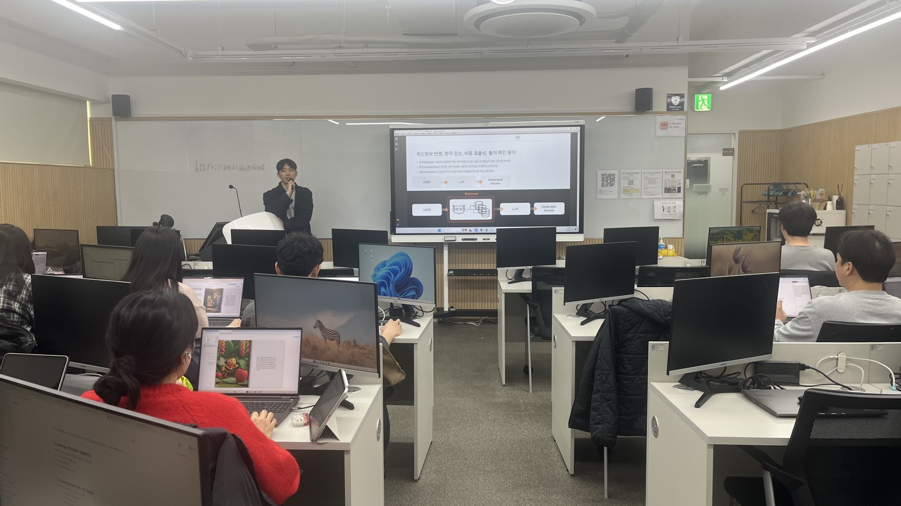
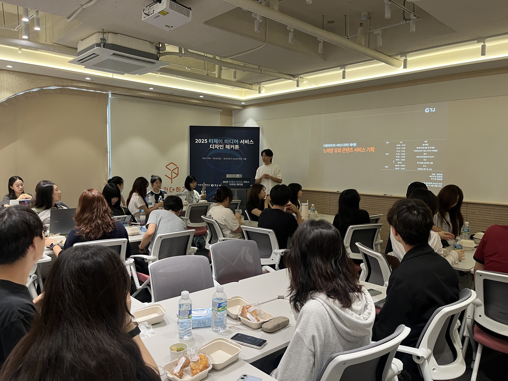
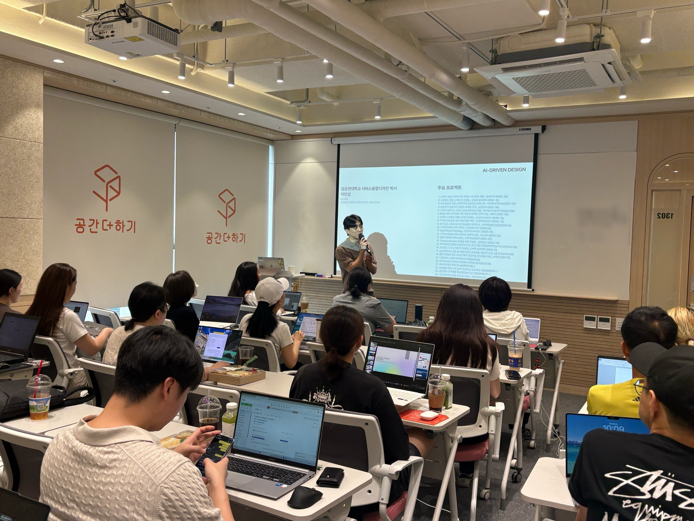
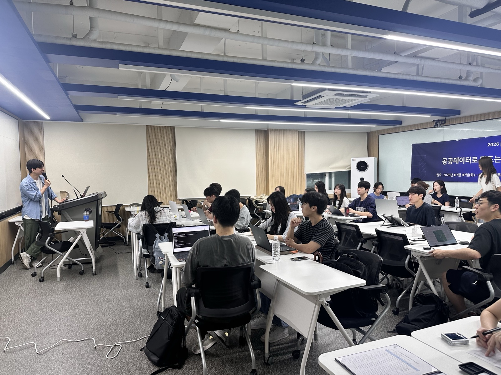

AI 부트캠프
기업과 학교를 위한 실전 문제해결 프로그램. 학교 과정은 창업·문제해결을 동시에 진행합니다.
기업 부트캠프 2 – 12 WEEKS
학교 부트캠프 (창업 + 문제해결) 1 SEMESTER
커스텀 트랙 설계 ON DEMAND
조직 단위로 문제를 해결하는 부트캠프, 실무자가 빠르게 무장하는 스킬트레이닝, 그리고 시스템을 만들어 남기는 AX 전환. 어떤 상황이든 맞춤 설계로 풀어드립니다.
기업과 학교를 위한 실전 문제해결 프로그램. 학교 과정은 창업·문제해결을 동시에 진행합니다.
네 가지 핵심 트랙. 단기 집중형, 실무 적용 즉시 가능. 기업 사내 교육과 공개 과정 모두 운영합니다.
교육을 넘어 구축까지. RAG 챗봇과 업무 자동화를 만들고, 팀이 직접 운영하도록 내재화합니다.
교육 PDF의 상세 커리큘럼은 문의 시 별도 안내드립니다. 모든 트랙은 사내 교육 형태로 커스터마이즈 가능합니다.
비개발자도 AI를 도구로 쓸 수 있게. 개념부터 실습까지.
FOR EVERYONE데이터를 읽고, 묻고, 의사결정에 쓰는 법.
FOR DECISION MAKERS사내 문서와 LLM을 연결하는 실전 RAG 시스템 구축.
FOR BUILDERSAI와 대화하며 제품을 만든다. 비개발자도 가능합니다.
FOR MAKERSAX(AI Transformation) — 조직의 일하는 방식을 AI로 전환하는 일. AI 교육을 해온 팀이 직접 진단하고, 만들고, 운영할 사람까지 남깁니다.
부서별 업무를 분석해 AI가 이길 수 있는 지점을 찾고, 도입 우선순위와 실행 계획을 설계합니다.
CONSULTING사내 문서·규정·매뉴얼을 연결한 RAG 시스템 구축. 조직의 지식이 검색되고, 답하게 만듭니다.
BUILD반복되는 보고·정리·응대 업무를 AI 워크플로우로 전환해 팀의 시간을 되돌려드립니다.
AUTOMATION구축과 동시에 운영할 사람을 키웁니다. 납품하고 떠나는 외주와 갈라지는 지점입니다.
ENABLEMENT만들어주고 떠나는 외주가 아니라,
팀이 직접 굴릴 수 있을 때까지.
AI 리터러시부터 실전 개발까지, 새로운 영상으로 풀어드립니다. 채널 구독으로 가장 빠르게 받아보세요.
매체에 소개된 리즈워드의 활동을 모았습니다.
리즈워드는 2026년 7월 14일부터 16일까지 사흘간 성균관대학교 인문사회과학캠퍼스에서 학부·대학원생 40명을 대상으로 'AI-VIBE 부트캠프'를 운영했다. 비전공자도 바이브코딩으로 아이디어를 서비스로 구현하며 기획부터 개발·발표까지 전 과정을 경험했다.
기사 읽기 ↗리즈워드는 2026년 7월 7일부터 9일까지 성균관대학교 자연과학캠퍼스에서 재학생 30명이 6개 팀으로 참여한 '공공데이터 활용 바이브코딩 MVP 개발' 부트캠프를 운영했다. 참가자들은 공공데이터로 실생활 문제를 정의하고 막차 계산·버스 혼잡도 예측 등 실전형 서비스를 사흘 만에 구현했다.
기사 읽기 ↗리즈워드는 2026년 2월 3일부터 5일까지 사흘간 성균관대학교에서 재학생 30명을 대상으로 생성형 AI 바이브코딩 부트캠프를 운영했다. 비개발자와 비전공자도 생성형 AI를 활용해 창업 아이디어를 직접 구현할 수 있도록 구성됐다.
기사 읽기 ↗대학과 기업에서 진행한 부트캠프 · 스킬트레이닝 사례입니다. 현장 사진과 결과물은 문의 시 공유드립니다.






서로 다른 산업과 규모의 조직에서, 같은 원칙으로 교육을 설계했습니다.
교육이든 구축이든 좋습니다. 기관·회사명과 필요하신 내용, 일정·인원을 남겨주세요. 빠르게 회신드리겠습니다.